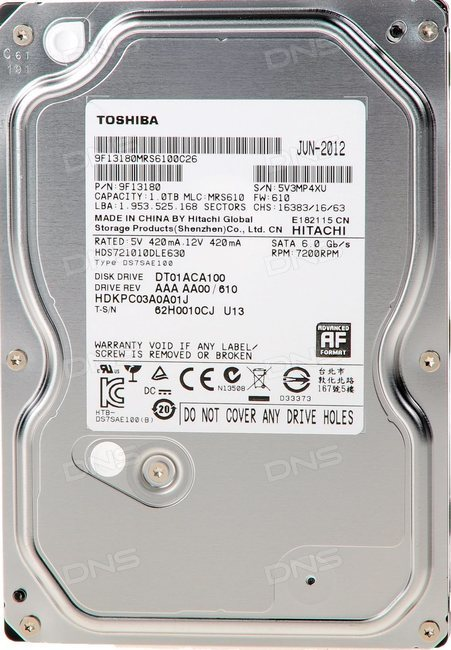

Жесткий диск Toshiba DT 01ACA100 1 Тб является надежным местом хранения для любых файлов. Он принадлежит к серии Deskstar седьмого поколения, модели которой отличаются не только высокими показателями производительности, но и продолжительным сроком эксплуатации.

| Характеристика | Значение |
|---|---|
| Модель | Toshiba [DT01ACA100] |
| Объем HDD | 1 ТБ |
| Объем кэш-памяти | 32 МБ |
| Скорость вращения шпинделя | 7200 rpm |
| Интерфейс | SATA III |
Жесткий диск Toshiba DT 01ACA100 1 Тб является надежным местом хранения для любых файлов. Он принадлежит к серии Deskstar седьмого поколения, модели которой отличаются не только высокими показателями производительности, но и продолжительным сроком эксплуатации. К системной плате компьютера модуль подключается через интерфейс SATA III, пропускная способность которого составляет 6 Гбит. Чтение информации с диска производится со скоростью и 125 Мб/с, а запись - 110 Мб/с. Жесткий диск не расходует много энергии (всего 6,4 Вт) и является практически бесшумным. Для хранения адресов быстрого доступа предусмотрено 32 Мб памяти кэш. Показатель задержки составляет 4,17 мс. Toshiba DT 01ACA100 1 Тб оптимально подойдет для использования на стационарных компьютерах дома и в офисе.